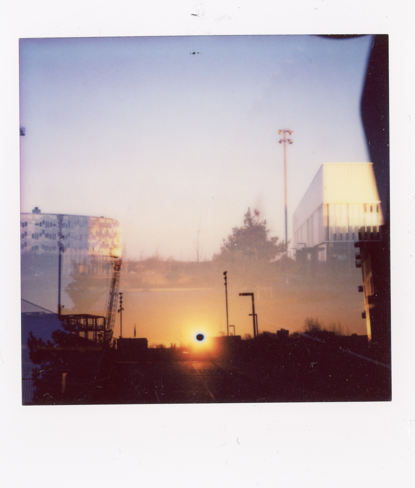
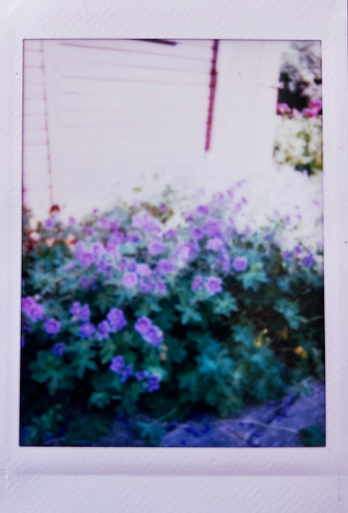

HVAD ER INSTANT UGEN?
Instant Ugen en hyldest til instant-fotografering; En opfordring til at udforske instant-fotografiets glæder. Instant Ugen foregår to gange årligt. Instant Ugen er ikke rigtig en fotokonkurrence, det er mere en hyldest til god gammeldags analog instant-fotografering - alle, der deltager, er vindere!
Læs mere
HVORFOR INSTANT FOTO?
Instant foto er et vidnesbyrd om livet. Instant foto blev til en omfattende forretning i 70'erne og 80'erne, indtil den digitale æra næsten slog hele branchen ihjel. Nu er instant foto stærkt på vej tilbage. Analoge, offline oplevelser er blevet populære igen. Og instant foto er netop det: En analog, livsbekræftende og taktil fotooplevelse. Så lad os fejre livet og skabe minder.
Opfundet i 1948 af Edwin Land
Polaroid gik konkurs i 2001
Nuværende format: Instax Wide (99×62 mm) vs. Polaroid Go (46×47 mm).
Største format: Polaroid 20×24 (1976–78), 510×610 mm.

SÅDAN DELTAGER DU:
For at deltage i Instant Ugen:
- Tag et billede af dit instant foto med din smartphone (eller scan det for den bedste kvalitet) - filen skal være mellem 2-10 MB, i jpg/jpeg- eller webp-format.
- Upload dit billede og dit navn + kontaktinfo på
- Deltagere skal være over 18 år, portrætterede personer skal have givet samtykke, og du accepterer, at dit instant foto må udstilles og bruges til at promovere fotokonkurrencen.
- Du kan indsende op til 5 bidrag - gennemgå trin 1-3 for hver indsendelse
INSPIRATION

STEFAN GRAGE
Beskrivelse/historien bag: Jeg ville give min højre arm for en smøg. Taget med et Lomomatic Square.

STEFAN GRAGE
Beskrivelse/historien bag: Et lille snapshot fra Amager Fælled, en stor skov i den sydvestlige del af København, Danmark. Taget med et Lomomatic Square.

STEFAN GRAGE
Beskrivelse/historien bag: Nordhavn, København, om natten. Lang eksponering med udløbet film. Jeg brugte en Polaroid Flip i manuel tilstand med en i-Type film for at lave en lang eksponering.